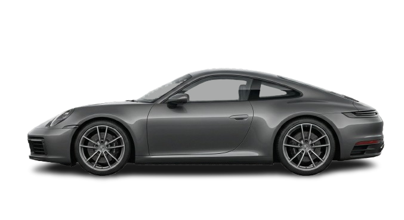

Porsche 911
Superdeportivo

Los mejores deportivos y superdeportivos en un solo lugar.
Los modelos más exclusivos de nuestra flota.

Superdeportivo
El arte del gran turismo británico. Un coupé de proporciones impecables y líneas fluidas que destila elegancia pura. Llevá la sofisticación y el lujo a su máxima expresión en cada viaje.

Superdeportivo
ADN de competición diseñado para la calle. Su perfil de motor central y las inconfundibles tomas de aire laterales imponen una presencia de deportividad extrema. Sentí el poder de un superdeportivo legendario.

Superdeportivo
Revolución aerodinámica. Con su agresiva silueta esculpida y diseño de motor central, este deportivo desafía todos los límites establecidos. Dominá el asfalto con una postura exótica e imponente.

Superdeportivo
El ícono indiscutido del muscle car. Su clásica caída de techo fastback y su perfil musculoso mantienen viva la leyenda de la potencia americana. Despertá tus instintos y adueñate de la ruta.

Superdeportivo
Pura adrenalina con traje de lujo. Su capó alargado y la cabina retrasada crean una obra maestra visual de velocidad y agresividad. Convertí tu pasión por el manejo en una experiencia de alta gama.
Superdeportivo
La silueta que definió la historia de los autos deportivos. Un diseño atemporal que conserva su inconfundible perfil curvo y proporciones perfectas. Invertí en la perfección clásica y el rendimiento puro.
Autos nobles con carácter deportivo para el día a día.
Deportivo
Deportividad premium en su máxima expresión. Este modelo cautiva con sus líneas vanguardistas y un diseño pensado para quienes no negocian la exclusividad ni el rendimiento. Subite al siguiente nivel.

Deportivo
Diseño audaz y un perfil irresistible. Un sedán estilizado, creado para quienes buscan destacar en cada viaje con elegancia, espacio y una presencia imponente en el asfalto. ¡Conocelo y enamorate a primera vista!

Deportivo
Elegancia urbana y eficiencia en cada kilómetro. Este sedán de líneas fluidas combina un diseño seductor con el confort ideal para tu día a día. ¡Descubrí el auto que se adapta a tu ritmo!

Deportivo
Atrevido, tecnológico y sofisticado. Con su marcado estilo aerodinámico y perfil moderno, este sedán redefine las reglas del juego en la ciudad. Elevá tu experiencia de conducción hoy mismo.

Deportivo
El equilibrio perfecto entre prestigio y máxima confiabilidad. Un sedán elegante de proporciones impecables que te asegura tranquilidad, confort y un excelente valor de reventa. La inversión inteligente para tu garage.

Deportivo
El ícono indiscutido de los hatchbacks. Su inconfundible perfil deportivo, detalles dinámicos y espíritu ágil están listos para adueñarse de la calle. Sentí la emoción de manejar un clásico moderno.
Supercars Olivos nace de una idea simple: que encontrar un auto deportivo no sea una búsqueda interminable. Reunimos en un solo lugar una selección curada de vehículos, desde modelos nobles pensados para el día a día hasta superdeportivos para quienes buscan algo más.
Organizamos la flota en dos líneas. En Deportivos están los autos nobles, con carácter y una conducción cómoda para todos los días. En Superdeportivos están los modelos premium, pensados para ofrecer prestaciones y presencia fuera de lo común.
Cada unidad se muestra con claridad y, si alguna te interesa, el botón Consultar te conecta con nuestro equipo, que responde tus dudas y te acompaña en cada paso. Estamos en Olivos y queremos que cada consulta sea tan buena como el auto que elegís.